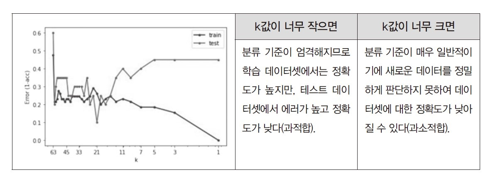
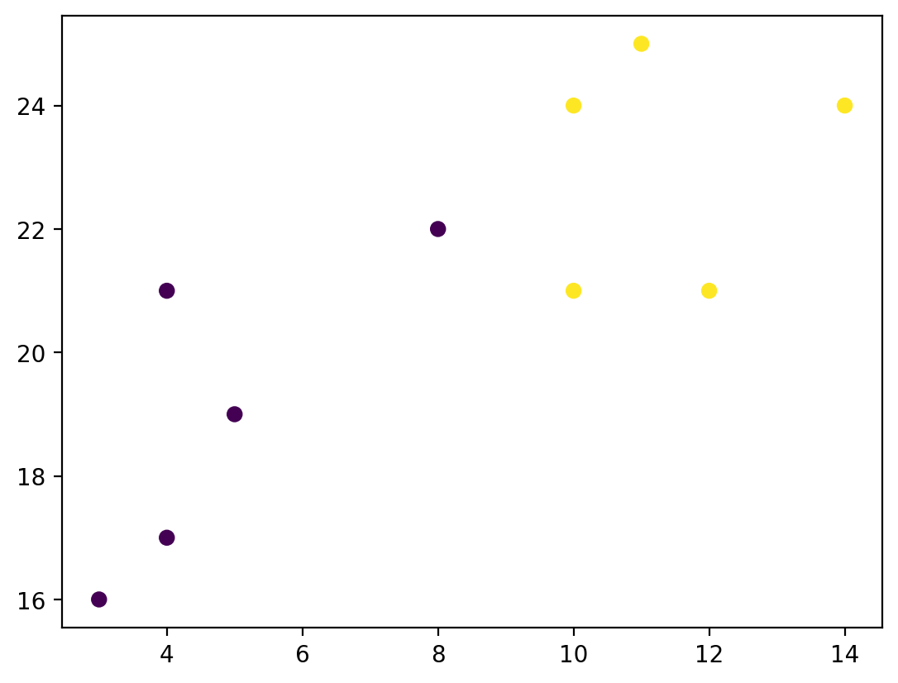
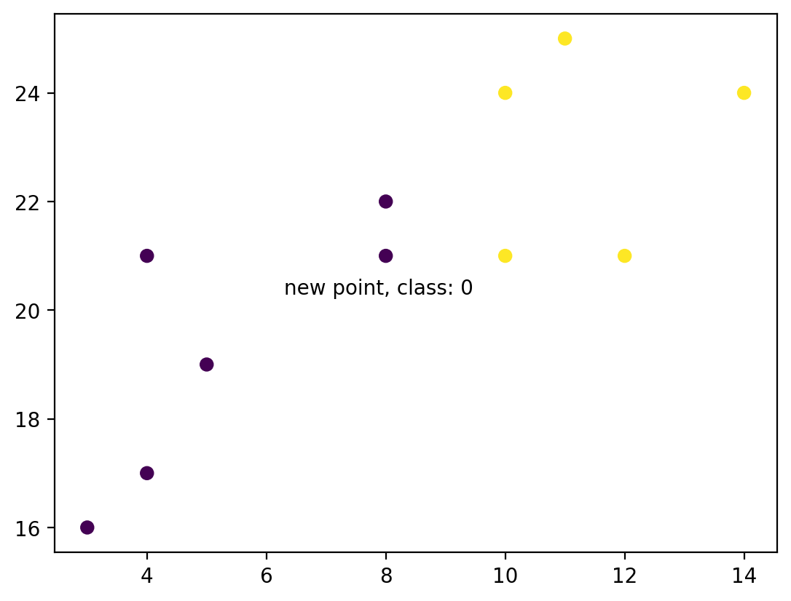
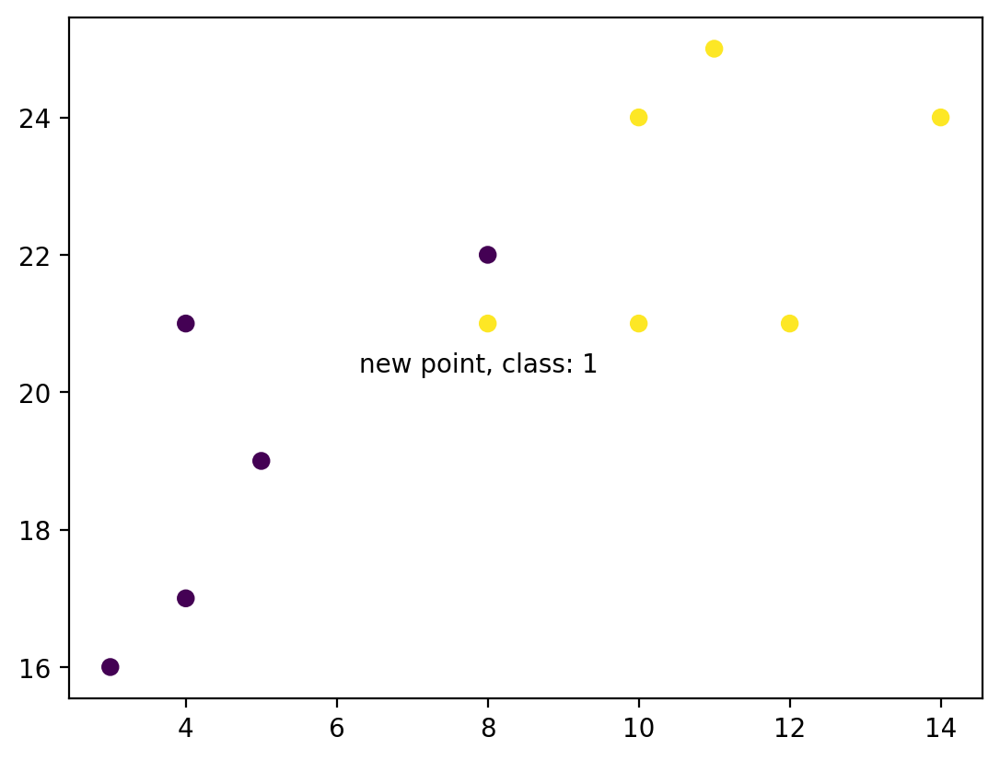
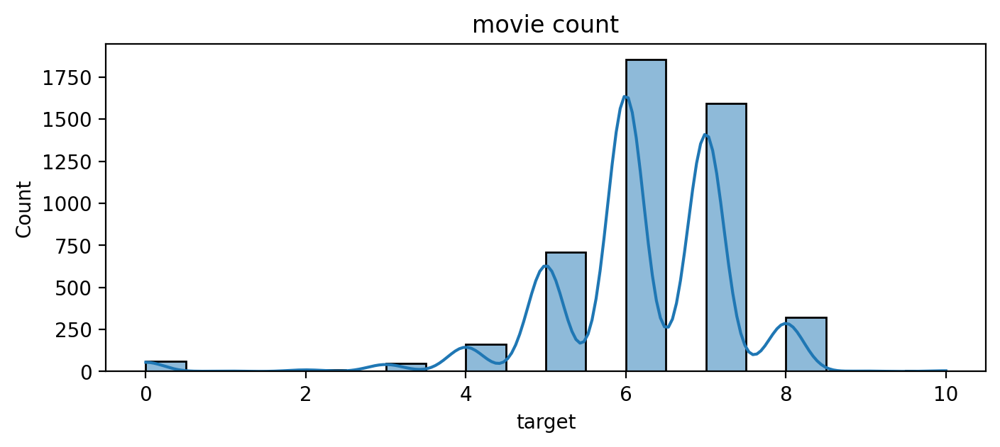
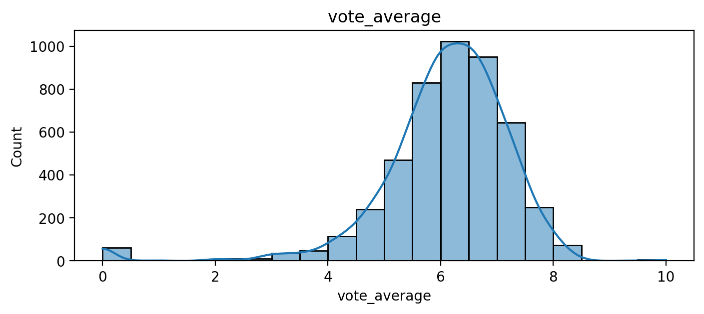
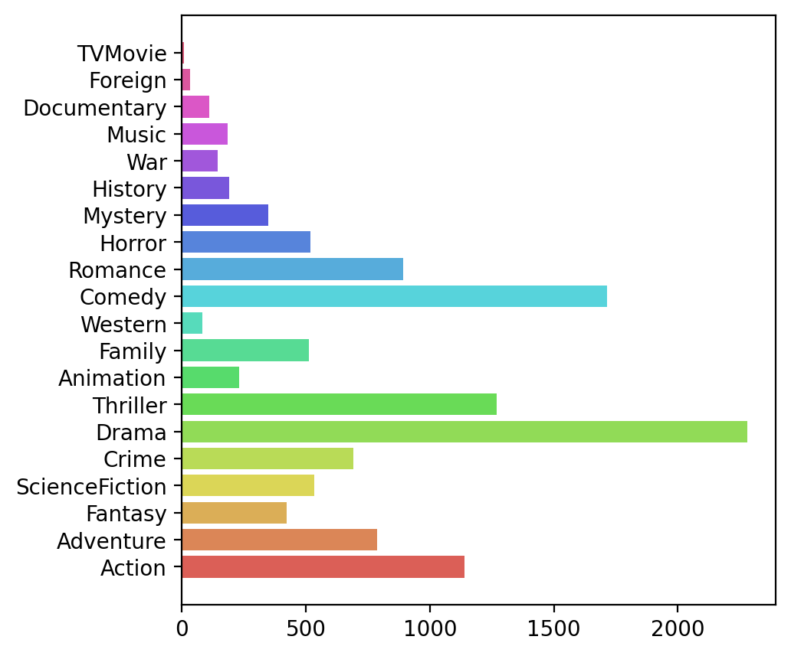
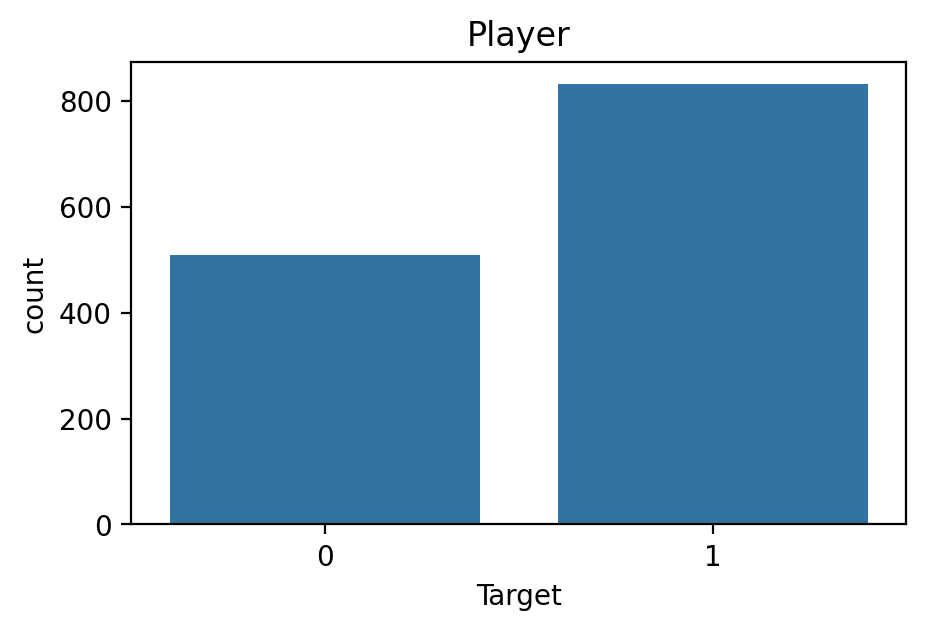

# 라이브러리 불러오기
import numpy as np
import pandas as pd
import matplotlib.pyplot as plt
import seaborn as sns
- 분류
9.1. K-최근접 이웃
- 분류(classification)
- 지도학습의 한 종류로, 라벨(label)이 있는 데이터를 기반으로 각 데이터가 속하는 집단(category) 간의 관계를 학습함
- 학습된 모델은 새로운 데이터가 어떤 집단에 속하는지 자동으로 판별할 수 있음
- 대표적인 알고리즘으로는 k-최근접 이웃(K-NN), 의사결정트리(decision tree), 나이브 베이즈(naive bayes), 서포트 벡터 머신(SVM) 등이 있음
- 활용 사례: 스팸 문자 분류, 수능 점수 기반 등급 판별, 의료 진단(암 유무 판별), 이미지 속 객체 인식(강아지와 고양이 분류)
- K-최근접 이웃(K-Nearest Neighbors)
- 입력된 데이터로부터 거리가 가까운 k개의 기존 데이터 레이블을 참조하여 가장 많이 속한 라벨로 입력된 데이터를 라벨링하는 방법
- 일반적으로 k의 개수는 동점 상황을 만들지 않기 위해 홀수로 지정함
- 거리 계산에는 보통 유클리디안 거리(Euclidean distance)를 사용함

- k의 수
- K-NN 알고리즘은 탐색할 이웃의 개수(k)에 따라 분류가 달라질 수 있음
- k가 너무 크면, 데이터의 세세한 패턴을 반영하지 못해 과소적합(underfitting)이 발생함
- k가 너무 작으면, 개별 데이터에 민감하게 반응하여 과적합(overfitting)이 발생함
- 일반적으로 최적의 k 값은 교차검증(cross-validation)을 통해 테스트 오차(test error)를 최소홯는 값으로 결정함
- K-NN 알고리즘은 탐색할 이웃의 개수(k)에 따라 분류가 달라질 수 있음

# 원두맛에 대한 데이터 생성
from sklearn.neighbors import KNeighborsClassifier
x = [4, 5, 10, 4, 3, 11, 14 , 8, 10, 12]
y = [21, 19, 24, 17, 16, 25, 24, 22, 21, 21]
classes = [0, 0, 1, 0, 0, 1, 1, 0, 1, 1]
plt.style.use('default')
plt.scatter(x, y, c=classes)
plt.show()
data = list(zip(x, y))
print(data)
[(4, 21), (5, 19), (10, 24), (4, 17), (3, 16), (11, 25), (14, 24), (8, 22), (10, 21), (12, 21)]# k=1
knn = KNeighborsClassifier(n_neighbors=1)
knn.fit(data, classes)
new_x = 8
new_y = 21
new_point = [(new_x, new_y)]
prediction = knn.predict(new_point)
print(prediction)
plt.scatter(x + [new_x], y + [new_y], c=classes + [prediction[0]])
plt.text(x=new_x-1.7, y=new_y-0.7, s=f"new point, class: {prediction[0]}")
plt.show()[0]
# k=5
knn = KNeighborsClassifier(n_neighbors=5)
knn.fit(data, classes)
prediction = knn.predict(new_point)
print(prediction)
plt.scatter(x + [new_x], y + [new_y], c=classes + [prediction[0]])
plt.text(x=new_x-1.7, y=new_y-0.7, s=f"new point, class: {prediction[0]}")
plt.show()[1]
# 교차검증으로 k찾기
from sklearn.model_selection import cross_val_score
knn=KNeighborsClassifier()
scores=cross_val_score(knn,data,classes,cv=3, scoring='accuracy')
for i in range(scores.size):
print(f"{i+1}번째 정확도: {scores[i]}")1번째 정확도: 1.0
2번째 정확도: 1.0
3번째 정확도: 0.6666666666666666# 표준화 예제 데이터 생성
df = pd.DataFrame({'A' : np.arange(11), 'B' : np.arange(11) ** 2})
df| A | B | |
|---|---|---|
| 0 | 0 | 0 |
| 1 | 1 | 1 |
| 2 | 2 | 4 |
| 3 | 3 | 9 |
| 4 | 4 | 16 |
| 5 | 5 | 25 |
| 6 | 6 | 36 |
| 7 | 7 | 49 |
| 8 | 8 | 64 |
| 9 | 9 | 81 |
| 10 | 10 | 100 |
# Standard Scaler
from sklearn.preprocessing import StandardScaler
standardScaler = StandardScaler()
df_standardScaled = standardScaler.fit_transform(df)
pd.DataFrame(df_standardScaled, columns = ['A_std', 'B_std'])| A_std | B_std | |
|---|---|---|
| 0 | -1.581139 | -1.066004 |
| 1 | -1.264911 | -1.035546 |
| 2 | -0.948683 | -0.944175 |
| 3 | -0.632456 | -0.791888 |
| 4 | -0.316228 | -0.578688 |
| 5 | 0.000000 | -0.304572 |
| 6 | 0.316228 | 0.030457 |
| 7 | 0.632456 | 0.426401 |
| 8 | 0.948683 | 0.883260 |
| 9 | 1.264911 | 1.401033 |
| 10 | 1.581139 | 1.979721 |
#MinMaxScaler
from sklearn.preprocessing import MinMaxScaler
minmaxScaler = MinMaxScaler()
df_minmaxScaled = minmaxScaler.fit_transform(df)
pd.DataFrame(df_minmaxScaled, columns = ['A_minmax', 'B_minmax'])| A_minmax | B_minmax | |
|---|---|---|
| 0 | 0.0 | 0.00 |
| 1 | 0.1 | 0.01 |
| 2 | 0.2 | 0.04 |
| 3 | 0.3 | 0.09 |
| 4 | 0.4 | 0.16 |
| 5 | 0.5 | 0.25 |
| 6 | 0.6 | 0.36 |
| 7 | 0.7 | 0.49 |
| 8 | 0.8 | 0.64 |
| 9 | 0.9 | 0.81 |
| 10 | 1.0 | 1.00 |
9.2. (실습) 드라마 분류
# 11.2 드라마분류하기
df = pd.read_csv('./data/chap11_movie_genre_final.csv')
df.head(3)| id | original_title | target | vote_average | Action | Adventure | Fantasy | ScienceFiction | Crime | Drama | ... | Mystery | History | War | Music | Documentary | Foreign | TVMovie | director | cast | keywords | |
|---|---|---|---|---|---|---|---|---|---|---|---|---|---|---|---|---|---|---|---|---|---|
| 0 | 19995 | Avatar | 7 | 7.2 | 1 | 1 | 1 | 1 | 0 | 0 | ... | 0 | 0 | 0 | 0 | 0 | 0 | 0 | James Cameron | SamWorthington,SigourneyWeaver,StephenLang,Zoe... | ['culture clash', 'future', 'space war', 'spac... |
| 1 | 285 | Pirates of the Caribbean: At World's End | 7 | 6.9 | 1 | 1 | 1 | 0 | 0 | 0 | ... | 0 | 0 | 0 | 0 | 0 | 0 | 0 | Gore Verbinski | JohnnyDepp,KeiraKnightley,OrlandoBloom,Stellan... | ['ocean', 'drug abuse', 'exotic island', 'east... |
| 2 | 206647 | Spectre | 6 | 6.3 | 1 | 1 | 0 | 0 | 1 | 0 | ... | 0 | 0 | 0 | 0 | 0 | 0 | 0 | Sam Mendes | ChristophWaltz,DanielCraig,LéaSeydoux,RalphFie... | ['spy', 'based on novel', 'secret agent', 'seq... |
3 rows × 27 columns
df.info()<class 'pandas.core.frame.DataFrame'>
RangeIndex: 4775 entries, 0 to 4774
Data columns (total 27 columns):
# Column Non-Null Count Dtype
--- ------ -------------- -----
0 id 4775 non-null int64
1 original_title 4775 non-null object
2 target 4775 non-null int64
3 vote_average 4775 non-null float64
4 Action 4775 non-null int64
5 Adventure 4775 non-null int64
6 Fantasy 4775 non-null int64
7 ScienceFiction 4775 non-null int64
8 Crime 4775 non-null int64
9 Drama 4775 non-null int64
10 Thriller 4775 non-null int64
11 Animation 4775 non-null int64
12 Family 4775 non-null int64
13 Western 4775 non-null int64
14 Comedy 4775 non-null int64
15 Romance 4775 non-null int64
16 Horror 4775 non-null int64
17 Mystery 4775 non-null int64
18 History 4775 non-null int64
19 War 4775 non-null int64
20 Music 4775 non-null int64
21 Documentary 4775 non-null int64
22 Foreign 4775 non-null int64
23 TVMovie 4775 non-null int64
24 director 4745 non-null object
25 cast 4732 non-null object
26 keywords 4775 non-null object
dtypes: float64(1), int64(22), object(4)
memory usage: 1007.4+ KBplt.figure(figsize=(8, 3))
sns.histplot(df['target'], bins=20, kde=True)
plt.title("movie count")
plt.show()
plt.figure(figsize=(8, 3))
sns.histplot(df['vote_average'], bins=20, kde=True)
plt.title("vote_average")
plt.show()
print(df.columns)Index(['id', 'original_title', 'target', 'vote_average', 'Action', 'Adventure',
'Fantasy', 'ScienceFiction', 'Crime', 'Drama', 'Thriller', 'Animation',
'Family', 'Western', 'Comedy', 'Romance', 'Horror', 'Mystery',
'History', 'War', 'Music', 'Documentary', 'Foreign', 'TVMovie',
'director', 'cast', 'keywords'],
dtype='object')count_list=[]
genre_list=['Action', 'Adventure','Fantasy', 'ScienceFiction', 'Crime', 'Drama', 'Thriller', 'Animation','Family', 'Western', 'Comedy', 'Romance', 'Horror', 'Mystery','History', 'War', 'Music', 'Documentary', 'Foreign', 'TVMovie']
for i in genre_list:
count_list.append(len(df[df[i]==1]))
count_list[1140,
786,
421,
535,
691,
2281,
1270,
232,
512,
81,
1714,
891,
518,
347,
191,
143,
184,
110,
33,
8]plt.figure(figsize=(5, 5))
plt.barh(genre_list,count_list,color=sns.color_palette('hls',20))
plt.show()
for i in range(len(genre_list)):
print(f'{genre_list[i]} : {count_list[i]}')Action : 1140
Adventure : 786
Fantasy : 421
ScienceFiction : 535
Crime : 691
Drama : 2281
Thriller : 1270
Animation : 232
Family : 512
Western : 81
Comedy : 1714
Romance : 891
Horror : 518
Mystery : 347
History : 191
War : 143
Music : 184
Documentary : 110
Foreign : 33
TVMovie : 8temp = (df.Drama==1)&(df.vote_average>=6.5)
df[temp]
print(f'드라마 장르 영화 2281편 중 평점 6.5 이상:{len(df[temp])}편')드라마 장르 영화 2281편 중 평점 6.5 이상:1208편temp = (df.Comedy==1)&(df.vote_average>=6.5)
df[temp]
print(f'코메디 장르 영화 1714편 중 평점 6.5 이상:{len(df[temp])}편')코메디 장르 영화 1714편 중 평점 6.5 이상:521편temp = (df.Thriller==1)&(df.vote_average>=6.5)
df[temp]
print(f'스릴러 영화 1270편 중 평점 6.5 이상:{len(df[temp])}편')스릴러 영화 1270편 중 평점 6.5 이상:415편temp = (df.Action==1)&(df.vote_average>=6.5)
df[temp]
print(f'액션 영화 1140편 중 평점 6.5 이상:{len(df[temp])}편')액션 영화 1140편 중 평점 6.5 이상:355편1208/22180.5446348061316502521/17140.3039673278879813415/12700.32677165354330706355/11400.31140350877192985from sklearn.model_selection import train_test_split
from sklearn.neighbors import KNeighborsClassifierx=df[['Action', 'Adventure', 'Fantasy', 'ScienceFiction', 'Crime', 'Drama', 'Thriller', 'Animation', 'Family', 'Western', 'Comedy', 'Romance', 'Horror', 'Mystery', 'History', 'War', 'Music', 'Documentary', 'Foreign', 'TVMovie']]
y=df[['target']]
from sklearn.model_selection import train_test_split
x_train, x_test, y_train, y_test = train_test_split( x, y, test_size=0.2)
print(x_train.shape)
print(x_test.shape)(3820, 20)
(955, 20)from sklearn.model_selection import cross_val_score
knn = KNeighborsClassifier()
scores=cross_val_score(knn, x_train, y_train, cv=2, scoring='accuracy')
for i in range(scores.size):
print(f"{i+1}번째 정확도: {scores[i]}")C:\Users\USER\anaconda3\Lib\site-packages\sklearn\neighbors\_classification.py:238: DataConversionWarning:
A column-vector y was passed when a 1d array was expected. Please change the shape of y to (n_samples,), for example using ravel().
C:\Users\USER\anaconda3\Lib\site-packages\sklearn\neighbors\_classification.py:238: DataConversionWarning:
A column-vector y was passed when a 1d array was expected. Please change the shape of y to (n_samples,), for example using ravel().
1번째 정확도: 0.37905759162303665
2번째 정확도: 0.3869109947643979from sklearn.neighbors import KNeighborsClassifier
neigh=KNeighborsClassifier(n_neighbors=5)
neigh.fit(x_train, y_train)
print(neigh.classes_)
print(f'거리계산방법: {neigh.effective_metric_}')
print(f'샘플수: {neigh.n_samples_fit_}')[ 0 1 2 3 4 5 6 7 8 9 10]
거리계산방법: euclidean
샘플수: 3820C:\Users\USER\anaconda3\Lib\site-packages\sklearn\neighbors\_classification.py:238: DataConversionWarning:
A column-vector y was passed when a 1d array was expected. Please change the shape of y to (n_samples,), for example using ravel().
print(neigh.score(x_test,y_test))0.393717277486911new_x = [1,0,0,0,0,1,0,0,0,0,0,0,0,0,0,0,0,0,0,0]
new_df = pd.DataFrame([new_x], columns=x_train.columns)
prediction = neigh.predict(new_df)
predictionarray([7], dtype=int64)from sklearn.model_selection import cross_val_score
from sklearn.neighbors import KNeighborsClassifier
from sklearn import datasets
diabetes = datasets.load_diabetes()
x = diabetes.data[:150]
y = diabetes.target[:150]
knn=KNeighborsClassifier()scores=cross_val_score(knn,x,y,cv=3,scoring='accuracy')
for i in range(scores.size):
print(f"{i+1}번째 정확도: {scores[i]}")1번째 정확도: 0.0
2번째 정확도: 0.0
3번째 정확도: 0.02C:\Users\USER\anaconda3\Lib\site-packages\sklearn\model_selection\_split.py:776: UserWarning:
The least populated class in y has only 1 members, which is less than n_splits=3.
9.3. (실습) 농구선수 분류
df = pd.read_csv('./data/chap11_basketball_final.csv')
df.head()| Rebounds | Assists | Steals | Blocks | Turnovers | Target | |
|---|---|---|---|---|---|---|
| 0 | 4.1 | 1.9 | 0.4 | 0.4 | 1.3 | 0 |
| 1 | 2.4 | 3.7 | 1.1 | 0.5 | 1.6 | 0 |
| 2 | 2.2 | 1.0 | 0.5 | 0.3 | 1.0 | 0 |
| 3 | 1.9 | 0.8 | 0.6 | 0.1 | 1.0 | 1 |
| 4 | 2.5 | 0.3 | 0.3 | 0.4 | 0.8 | 1 |
df.info()<class 'pandas.core.frame.DataFrame'>
RangeIndex: 1340 entries, 0 to 1339
Data columns (total 6 columns):
# Column Non-Null Count Dtype
--- ------ -------------- -----
0 Rebounds 1340 non-null float64
1 Assists 1340 non-null float64
2 Steals 1340 non-null float64
3 Blocks 1340 non-null float64
4 Turnovers 1340 non-null float64
5 Target 1340 non-null int64
dtypes: float64(5), int64(1)
memory usage: 62.9 KBdf['Target'].value_counts()Target
1 831
0 509
Name: count, dtype: int64# 경력별 선수의 수
plt.figure(figsize=(5, 3))
sns.countplot(x=df['Target'])
plt.title("Player")
plt.show()
# 경력에 따른 농구 기술
print(f"리바운드\n {df['Rebounds'].groupby(df['Target']).mean()}")
print(f"어시스트\n {df['Assists'].groupby(df['Target']).mean()}")
print(f"스틸\n {df['Steals'].groupby(df['Target']).mean()}")
print(f"블록\n {df['Blocks'].groupby(df['Target']).mean()}")
print(f"턴오버\n {df['Turnovers'].groupby(df['Target']).mean()}")리바운드
Target
0 2.247544
1 3.516486
Name: Rebounds, dtype: float64
어시스트
Target
0 1.221022
1 1.752347
Name: Assists, dtype: float64
스틸
Target
0 0.498232
1 0.692178
Name: Steals, dtype: float64
블록
Target
0 0.253438
1 0.439110
Name: Blocks, dtype: float64
턴오버
Target
0 0.942240
1 1.347533
Name: Turnovers, dtype: float64# 훈련데이터와 테스트데이터 분리
x=df[['Rebounds','Assists','Steals','Blocks','Turnovers']]
y=df[['Target']]
from sklearn.model_selection import train_test_split
x_train, x_test, y_train, y_test = train_test_split( x, y, test_size=0.2)
print(x_train.shape)
print(x_test.shape)(1072, 5)
(268, 5)# 최적의 k찾기
from sklearn.model_selection import cross_val_score
knn=KNeighborsClassifier()
scores=cross_val_score(knn,x,y,cv=5, scoring='accuracy')
for i in range(scores.size):
print(f"{i+1}번째 정확도: {scores[i]}")1번째 정확도: 0.6492537313432836
2번째 정확도: 0.6119402985074627
3번째 정확도: 0.5708955223880597
4번째 정확도: 0.6082089552238806
5번째 정확도: 0.6455223880597015C:\Users\USER\anaconda3\Lib\site-packages\sklearn\neighbors\_classification.py:238: DataConversionWarning:
A column-vector y was passed when a 1d array was expected. Please change the shape of y to (n_samples,), for example using ravel().
C:\Users\USER\anaconda3\Lib\site-packages\sklearn\neighbors\_classification.py:238: DataConversionWarning:
A column-vector y was passed when a 1d array was expected. Please change the shape of y to (n_samples,), for example using ravel().
C:\Users\USER\anaconda3\Lib\site-packages\sklearn\neighbors\_classification.py:238: DataConversionWarning:
A column-vector y was passed when a 1d array was expected. Please change the shape of y to (n_samples,), for example using ravel().
C:\Users\USER\anaconda3\Lib\site-packages\sklearn\neighbors\_classification.py:238: DataConversionWarning:
A column-vector y was passed when a 1d array was expected. Please change the shape of y to (n_samples,), for example using ravel().
C:\Users\USER\anaconda3\Lib\site-packages\sklearn\neighbors\_classification.py:238: DataConversionWarning:
A column-vector y was passed when a 1d array was expected. Please change the shape of y to (n_samples,), for example using ravel().
# 모델 생성과 학습
from sklearn.neighbors import KNeighborsClassifier
neigh=KNeighborsClassifier(n_neighbors=7)
neigh.fit(x_train, y_train)
print(neigh.classes_)
print(f'거리계산방법: {neigh.effective_metric_}')
print(f'샘플수: {neigh.n_samples_fit_}')[0 1]
거리계산방법: euclidean
샘플수: 1072C:\Users\USER\anaconda3\Lib\site-packages\sklearn\neighbors\_classification.py:238: DataConversionWarning:
A column-vector y was passed when a 1d array was expected. Please change the shape of y to (n_samples,), for example using ravel().
print(neigh.score(x_test,y_test))
new_x = [3,3,2,2,4]
prediction = neigh.predict([new_x])
print(prediction)0.6791044776119403
[1]C:\Users\USER\anaconda3\Lib\site-packages\sklearn\base.py:493: UserWarning:
X does not have valid feature names, but KNeighborsClassifier was fitted with feature names